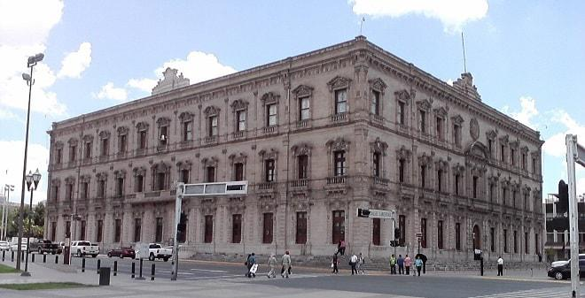
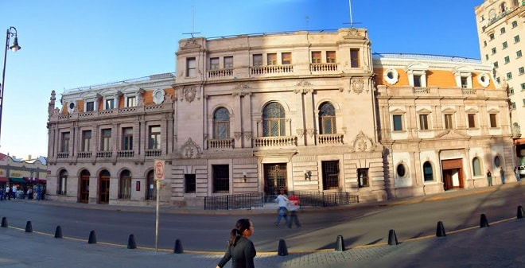
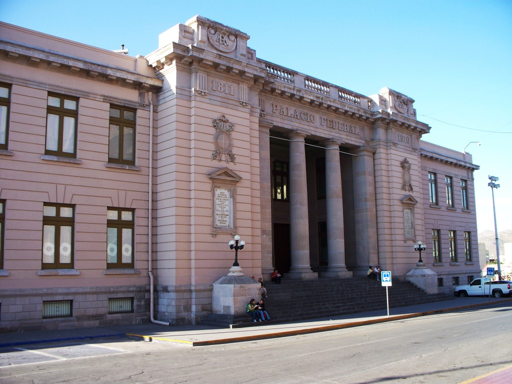
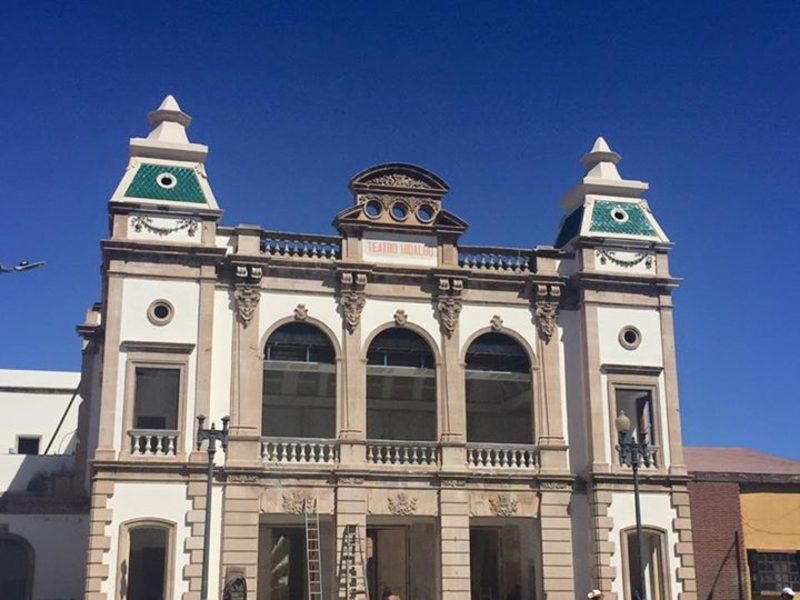
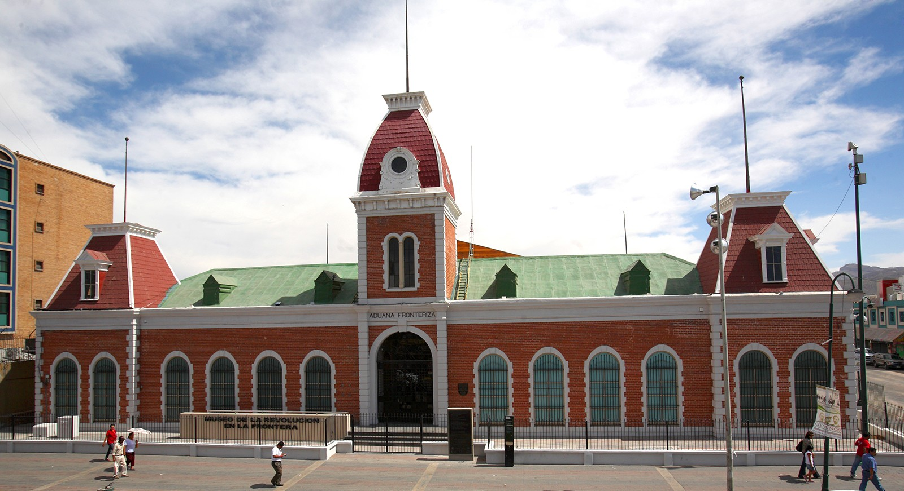

En la entidad de Chihuahua a fines del S.XIX e inicios del S.XX se construyeron edificios públicos que embellecieron las ciudades, como el Palacio de Gobierno, el Palacio Municipal y el Palacio Federal en Chihuahua.
  
Los terratenientes locales mandaron a contruir haciendas y casas en las ciudades en las que vivían con todos los lujos.
También se construyeron edificios como el teatro Hidalgo en Parral, la aduana en Cd. Juárez, entre otros.
 